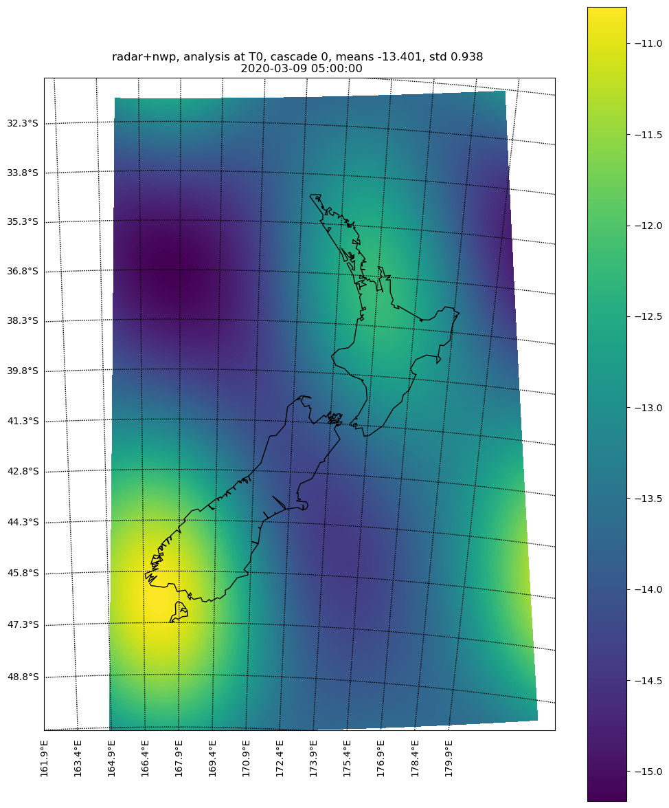
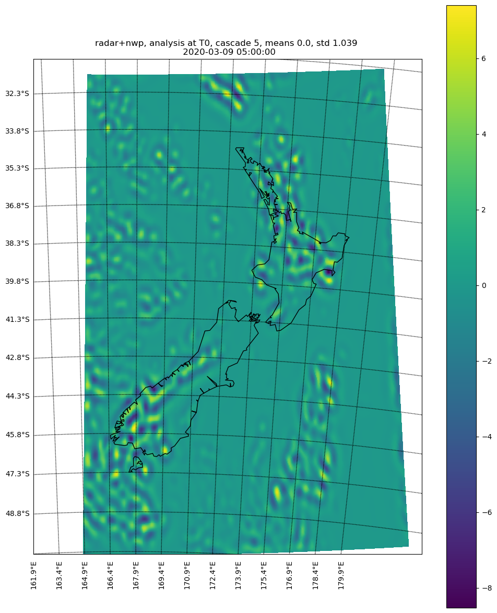

Data decomposition¶
The gaussian filter is applied to decompose both the radar and NWP data:
M = 510
N = 330
n_cascade_levels = 10
filter_kwargs = {}
filter = bandpass_filter.filter_gaussian(
(M, N), n_cascade_levels, **filter_kwargs)
The cascade resolution/grid can be obtained from the above filter by:
_, cascade_grid = raincast_utils.get_cascade_res(
filter['central_freqs'], n_cascade_levels, kmperpixel)
cascade_grid = [2040.0, 680.0, 390.24, 223.95, 128.52, 73.76, 42.33, 24.29, 13.94, 8.0]
Radar decomposition¶
Radar data is decomposed into the cascades according to the above configurations:
R_radar_cascades = []
for i in range(ar_order + 1):
R_radar_ = decomposition.decomposition_fft(
R_radar[i, :, :], filter, MASK=MASK_thr)
if reduce_numpy_size:
R_radar_['cascade_levels'] = raincast_utils.reduce_array_size(
R_radar_['cascade_levels'], REDUCED_ARRAY_TYPE)
R_radar_cascades.append(R_radar_)
Note that R_radar at least has three time dimensions which starts from the begining of goback hours (e.g., the extrapolation from 2 hours ago), and ends at the observation (the one without any extrapolations). They are all decomposed at this step.
Here are some examples from the decomposed observation (e.g., R_radar_[-1, :, :]) at the cascade 0 and cascade 5:
 {kind=link}
{kind=link}
For all the decomposed examples, please see decomposed radar gallery
NWP decomposition¶
Similar to the radar data, all the NWP forecasts (over all prognosis) are required to be decomposed into cascades, please see decomposed NWP gallery for all the figures.